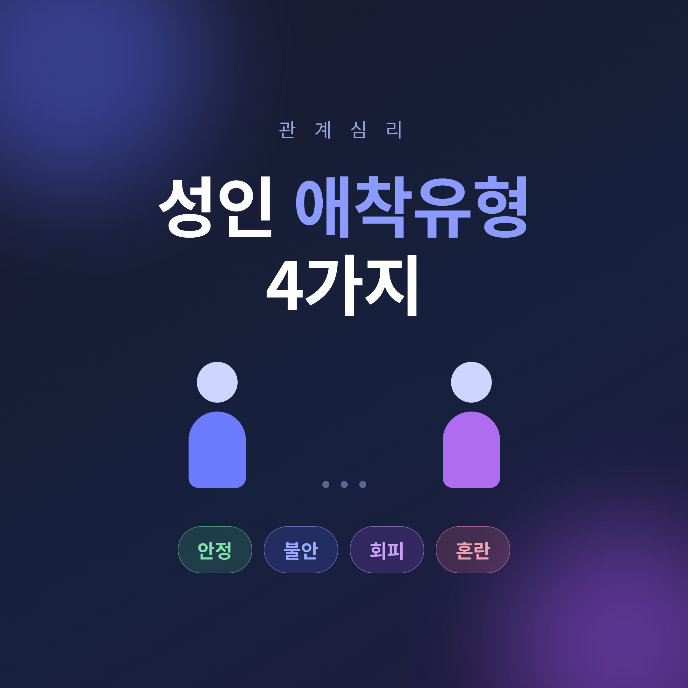
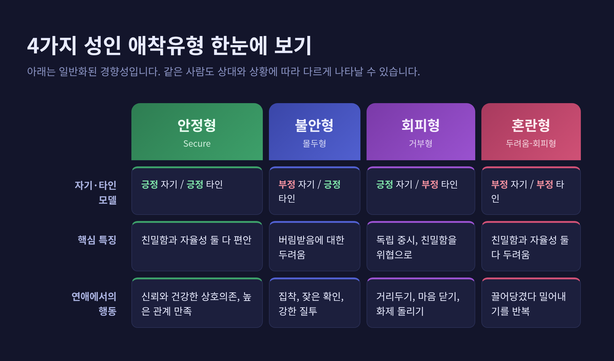
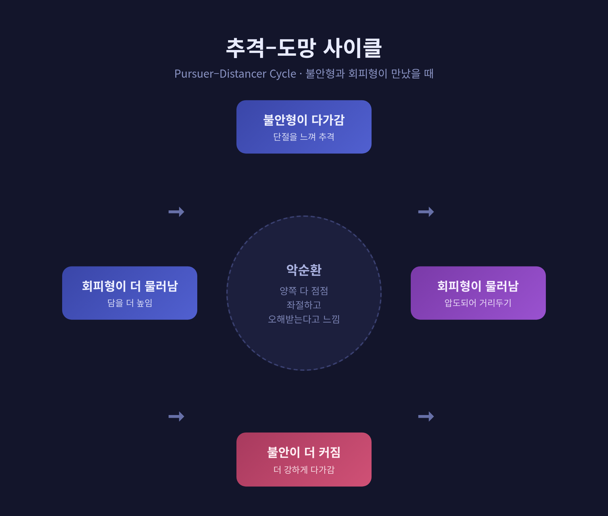

[상담] 성인 애착유형 4가지 — 안정·불안·회피·혼란형, 연애 패턴과 회복법

이번 글에서는 성인 애착유형 네 가지를 정리해 보겠습니다.
안정형·불안형·회피형·혼란형이 연애와 인간관계에서 어떻게 드러나는지, 그리고 그 패턴이 바뀔 수 있는지까지 다룹니다.
먼저 핵심부터 세 줄로 요약합니다.
- 성인 애착유형은 안정형, 불안형, 회피형, 혼란형(두려움-회피형) 네 가지로 나뉩니다.
- 불안형과 회피형이 만나면 '쫓고 물러나는' 추격-도망 사이클이 자주 반복됩니다.
- 애착유형은 고정된 라벨이 아니며, 성인이 되어서도 안정형으로 변할 수 있습니다.
애착이론은 어디서 시작됐나
애착이론의 출발점에는 두 사람이 있습니다.
존 볼비(John Bowlby)는 애착이론을 처음 세운 학자입니다.
그는 아이가 양육자에게 애착을 형성하려는 본능을 가지고 태어난다고 보았습니다.
이때 애착을 좌우하는 핵심은 '먹이'가 아니라 양육자의 보살핌과 반응성이었습니다.
볼비에 따르면 안정적으로 애착된 사람은 애착 대상이 "곁에 있고, 반응해 주고, 도와준다"는 믿음을 마음속에 갖습니다.
메리 에인스워스(Mary Ainsworth)는 볼비의 연구를 양육자 쪽에서 확장했습니다.
그녀는 안정 애착에 세 가지가 필요하다고 정리했습니다 — 양육자의 가용성, 적절한 반응성, 그리고 아이의 신호에 대한 민감성.
에인스워스는 '낯선 상황 실험'으로 이를 관찰했습니다.
생후 12개월 영아와 부모를 실험실에 데려와, 분리와 재회를 반복시키며 아이의 반응을 살핀 절차입니다.
이 실험을 통해 영아의 애착은 안정·회피·불안(저항)으로 분류되었고, 이후 혼란형이 더해졌습니다.
패턴은 양육과 맞물려 있었습니다.
안정 애착 아이의 부모는 욕구에 반응적이었습니다.
불안정 애착 아이의 부모는 둔감하거나, 일관성이 없거나, 거부적인 경향이 있었습니다.
어린 시절의 애착이 어른의 연애로
영아의 애착이 어른의 연애로 이어진다는 생각은 한참 뒤에 나왔습니다.
하잔과 셰이버(Hazan & Shaver, 1987)는 애착이론을 성인의 낭만적 관계에 적용했습니다.
이들은 영아–양육자 애착과 성인의 연애 애착 사이에 평행한 구조가 있음을 발견했습니다.
초기에는 세 유형, 곧 안정·불안(몰두)·회피로 나누었습니다.
이 고전 연구에서 응답자의 자기보고 분포는 안정 약 56퍼센트, 회피 약 25퍼센트, 양가(불안) 약 19퍼센트였습니다.
다만 이 수치는 특정 표본의 결과입니다.
표본과 시대, 측정 방식에 따라 분포는 달라지므로 절대적인 비율로 받아들이지 않는 편이 좋습니다.
오늘날 널리 쓰이는 네 유형은 바돌로뮤와 호로위츠(Bartholomew & Horowitz, 1991)의 4범주 모델에서 왔습니다.
이 모델은 두 개의 축이 교차합니다.
- 자기 모델: 자기 가치감의 정도. 관계에서의 불안·의존과 연관됩니다.
- 타인 모델: 타인이 곁에 있어 줄 것이라는 믿음의 정도. 친밀함을 추구하느냐 회피하느냐와 연관됩니다.
두 축이 만나 네 패턴이 나옵니다.
혼란형(두려움-회피형)은 하잔과 셰이버의 원래 세 범주에는 없었고, 이 4범주 모델을 통해 성인 애착 연구로 들어왔습니다.
네 가지 성인 애착유형 한눈에 보기
먼저 표로 정리합니다.
다만 아래는 일반화된 경향성입니다. 같은 사람도 상대와 상황에 따라 다르게 나타날 수 있습니다.

| 유형 | 자기·타인 모델 | 핵심 특징 | 연애에서의 행동 |
|---|---|---|---|
| 안정형 | 긍정적 자기 / 긍정적 타인 | 친밀함과 자율성 둘 다 편안 | 신뢰와 건강한 상호의존, 높은 관계 만족 |
| 불안형(몰두형) | 부정적 자기 / 긍정적 타인 | 버림받음에 대한 두려움 | 집착, 잦은 확인, 강한 질투 |
| 회피형(거부형) | 긍정적 자기 / 부정적 타인 | 독립 중시, 친밀함을 위협으로 | 거리두기, 마음 닫기, 화제 돌리기 |
| 혼란형(두려움-회피형) | 부정적 자기 / 부정적 타인 | 친밀함과 자율성 둘 다 두려움 | 끌어당겼다 밀어내는 반복 |
하나씩 풀어 보겠습니다.
안정형(Secure) 은 자기와 타인 모두에 긍정적인 모델을 가집니다.
친밀함도 자율성도 편안하게 다룹니다.
신뢰와 건강한 상호의존에 기반해, 안정적이고 만족스러운 관계를 형성하는 경향이 있습니다.
불안형(불안-몰두형) 의 중심에는 버림받음에 대한 두려움이 있습니다.
사랑과 확신을 강하게 갈망합니다.
연애에서는 집착, 감정의 고저, 강한 질투로 나타나곤 합니다.
"상대가 정말 날 사랑할까, 떠나지 않을까" 끊임없이 의심하고, 매달리거나 반복해서 확인을 구합니다.
역설적이게도 이 '안심을 구하는 행동'이 상대를 밀어내기도 합니다.
회피형(회피-거부형) 은 긍정적 자기 모델과 부정적 타인 모델을 가집니다.
독립을 중시하고, 친밀함을 위협처럼 느낍니다.
"낭만적 사랑은 오래가기 어렵다"고 느끼는 경향이 있습니다.
가까워지면 마음을 닫거나, 화제를 돌리거나, 바빠지는 식으로 거리를 둡니다.
혼란형(두려움-회피형) 은 부정적 자기와 부정적 타인 모델을 함께 가집니다.
친밀함도 자율성도 둘 다 두려워합니다.
상대를 가까이 끌어당겼다가 다시 밀어내기를 오갑니다.
강렬한 친밀함 뒤에 거리두기와 적대가 따라오는, 정서적 롤러코스터에 가깝습니다.
한 가지 덧붙입니다.
혼란형은 자료에 따라 '두려움-회피형'으로도 불립니다. 그래서 이 글에서는 둘을 함께 적었습니다.
불안형과 회피형이 만나면 — 추격과 도망의 사이클
네 유형 중에서도 자주 화제가 되는 조합이 있습니다.
바로 불안형과 회피형의 만남입니다.
이 둘 사이에서는 '추격-도망(Pursuer–Distancer) 사이클'이 반복되기 쉽습니다.
한쪽은 정서적 친밀함과 안심을 계속 추구하고, 다른 한쪽은 부담을 느껴 물러나는 패턴입니다.
보통 불안형이 추격자가 됩니다.
버림받을까 두려워 자꾸 다가갑니다.
회피형은 거리두는 자가 됩니다.
가까움을 위협으로 느껴 물러납니다.

사이클은 이렇게 돕니다.
추격자가 단절을 느껴 다가갑니다.
거리두는 자가 압도되어 물러납니다.
추격자의 불안이 더 커져 더 강하게 다가갑니다.
거리두는 자가 더 물러납니다.
양쪽 다 점점 좌절하고, 오해받는다고 느낍니다.
이 사이클은 진정한 친밀함을 가로막습니다.
고트만(Gottman)의 연구에 따르면, 이 사이클에 갇힌 커플은 더 일찍 헤어지거나 이혼할 가능성이 유의하게 높았습니다.
벗어나는 길도 연구되어 있습니다.
감정중심치료(EFT)에서는 각자가 행동 밑에 깔린 취약성을 표현하도록 돕습니다.
추격 밑에는 보통 버림받음의 두려움이, 물러남 밑에는 보통 부족함과 무능감의 두려움이 있습니다.
양쪽이 이 부드러운 감정에 닿으면, 사이클의 힘이 약해집니다.
애착유형은 바뀔 수 있는가 — 획득된 안정 애착
여기까지 읽고 "나는 회피형이라 어쩔 수 없나" 싶으실 수 있습니다.
그렇지 않습니다.
애착유형은 성인기에도 변할 수 있습니다.
이것은 애착이론의 예외가 아니라, 현대 애착 연구의 중심 발견입니다.
이를 '획득된 안정 애착(Earned Secure Attachment)'이라 부릅니다.
어린 시절 안정 애착을 경험하지 못했더라도, 치료적 작업과 자기 성찰을 통해 건강한 관계 패턴을 발달시키는 것을 말합니다.
자기 애착의 역사를 이해하고, 과거 경험을 처리하며, 새로운 관계 기술을 배우면서 능동적으로 길러집니다.
뇌 차원에서도 설명됩니다.
애착유형은 절차기억에 저장된 학습된 패턴입니다.
뇌의 신경가소성 덕분에, 안전한 관계 경험이 반복되면 수개월에서 수년에 걸쳐 점진적으로 재배선될 수 있습니다.
획득된 안정 애착은 주로 반복되는 안전하고 교정적인 관계 경험을 통해 형성됩니다.
대개 치료 관계 안에서 일어납니다.
효과적인 접근으로는 감정중심치료(EFT), 애착기반치료, 정신역동치료, EMDR, CBT, DBT 등이 거론됩니다.
유형별로 권하는 방향은 조금씩 다릅니다.
- 불안형: 스스로를 달래는 자기진정 연습, 자기 확신과 자존감 키우기, 내면의 불안 탐색.
- 회피형: 가까운 관계에서 취약해지는 연습, 욕구를 조금씩 표현하고 타인이 곁에 있도록 허용하기.
- 공통: 무엇이 두려움과 물러남, 과잉밀착을 촉발하는지 자기 패턴을 알아차리기. 인식이 변화의 첫걸음입니다.
다만 솔직히 말씀드리면, 회복은 한 방향으로만 나아가지 않습니다.
비선형이고, 후퇴는 정상적인 과정의 일부입니다.
가끔 옛 행동으로 돌아간다고 해서, 처음부터 다시 시작하는 것은 아닙니다.
끝으로 한 마디만 더 드리겠습니다.
애착유형은 나를 설명하는 출발점이지, 나를 가두는 결론이 아닙니다.
같은 사람도 어떤 상대와는 안정적이고, 다른 상대와는 불안하게 반응합니다.
그러니 자가진단 결과를 고정된 정체성으로 삼지 않으셨으면 합니다.
다시 강조합니다. 이 글은 일반적인 정보일 뿐, 전문 상담을 대신하지 못합니다.
스스로의 패턴이 자꾸 관계를 아프게 한다고 느껴지신다면, 전문가와 함께 들여다보시길 권합니다.
"애착은 타고난 운명이 아니라, 다시 배울 수 있는 언어입니다."
지금의 패턴을 바꿀 수 있겠냐고 물으신다면, 시간은 걸려도 그렇다고 답하겠습니다.